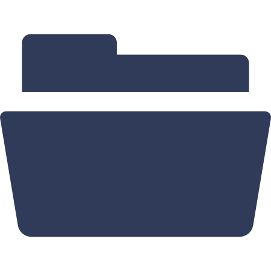

<!DOCTYPE html>
<html lang="en">
<head>
    <title>Leaflet Filelayer </title>
    <meta charset="UTF-8">
    <meta name="viewport" content="width=device-width, initial-scale=1">
    <link rel="stylesheet" href="https://cdnjs.cloudflare.com/ajax/libs/normalize/4.2.0/normalize.min.css">
    <link rel="stylesheet" href="https://unpkg.com/leaflet@1.1.0/dist/leaflet.css">

    <style>
      .icon {
        max-width: 70%;
        max-height: 70%;
        margin: 4px;
      }
    </style>
</head>
<body>
    <div id="map" style="width: 100vw; height: 100vh;"></div>
</body>
<script src="https://unpkg.com/leaflet@1.1.0/dist/leaflet.js"></script>
<script src="https://unpkg.com/togeojson@0.14.2"></script>
<script src="../src/leaflet.filelayer.js"></script>
<script src = "passi.js"></script>


<script>
    //localStorage.clear();
    // Remove the item from local storage
    //var trackKey = 'gpxTrack_1697484966776'; // Replace with the actual key
    //localStorage.removeItem(trackKey);


  (function (window) {
    'use strict';
      
    // Initialize the map
    var L = window.L;

    var osm = L.tileLayer('https://api.maptiler.com/maps/basic-v2/{z}/{x}/{y}.png?key=5oOhPnaZPwb4EiDFpWyW', {
      attribution: '<a href="https://www.maptiler.com/copyright/" target="_blank">&copy; MapTiler</a> <a href="https://www.openstreetmap.org/copyright" target="_blank">&copy; OpenStreetMap contributors</a>'
    });
    var map = L.map('map', {
      center: [45.464664, 9.188540],
      zoom: 11
    }).addLayer(osm);

    //add other maps
    var satellite = L.tileLayer('https://api.maptiler.com/maps/satellite/{z}/{x}/{y}.jpg?key=5oOhPnaZPwb4EiDFpWyW', {
      attribution: '<a href="https://www.maptiler.com/copyright/" target="_blank">&copy; MapTiler</a> <a href="https://www.openstreetmap.org/copyright" target="_blank">&copy; OpenStreetMap contributors</a>'
    });

    var streets = L.tileLayer('https://api.maptiler.com/maps/streets-v2/{z}/{x}/{y}.png?key=5oOhPnaZPwb4EiDFpWyW', {
        attribution: '<a href="https://www.maptiler.com/copyright/" target="_blank">&copy; MapTiler</a> <a href="https://www.openstreetmap.org/copyright" target="_blank">&copy; OpenStreetMap contributors</a>'
    });

    var outdoor = L.tileLayer('https://api.maptiler.com/maps/outdoor-v2/{z}/{x}/{y}.png?key=5oOhPnaZPwb4EiDFpWyW', {
        attribution: '<a href="https://www.maptiler.com/copyright/" target="_blank">&copy; MapTiler</a> <a href="https://www.openstreetmap.org/copyright" target="_blank">&copy; OpenStreetMap contributors</a>'
    });

    var topo = L.tileLayer('https://api.maptiler.com/maps/topo-v2/{z}/{x}/{y}.png?key=5oOhPnaZPwb4EiDFpWyW', {
        attribution: '<a href="https://www.maptiler.com/copyright/" target="_blank">&copy; MapTiler</a> <a href="https://www.openstreetmap.org/copyright" target="_blank">&copy; OpenStreetMap contributors</a>'
    });

    var baseMaps = {
        'Standard': osm,
        'Satellite': satellite,
        'Street': streets,
        'Outdoor': outdoor,
        'Topography': topo
    }
    var layerControl1 = L.control.layers(baseMaps).addTo(map);


    // Create a layer group to store the GPX tracks
    var gpxTracks = L.layerGroup().addTo(map);
    var geoJSONTrackData = [];
    var geoJSONArray = [];
    var selected = [];
    var id;
    var geoLayer;
      
    // Function to handle the file import and display GeoJSON tracks
    function importGPXTracks() {
      for (var i = 0; i < localStorage.length; i++) {
        var key = localStorage.key(i);
        if (key.startsWith('gpxTrack_')) {
          // Retrieve the GeoJSON track data and parse it
          geoJSONTrackData = JSON.parse(localStorage.getItem(key));
          var ise;
          var isClicked = false;
          // Create a GeoJSON layer and add it to the map
          geoLayer = L.geoJSON(geoJSONTrackData, {
            style: {
              color: 'pink',
              weight: 2,
            },
            onEachFeature: function (feature, layer) {
              layer.bindPopup(function (layer) {
                  return '<p style="margin-bottom: 5px;"><a href="' + feature.properties.link + '" target="_blank">' + feature.properties.name + '</a></p> (' + feature.properties.length + ', ' + feature.properties.elevation + ')<p style="margin-top: 5px;">';
              });
              ise = layer.feature.properties.id;
              layer.on('click', function(e){
                var clickedLayer = event.layer;

                if (isClicked) {
                    this.setStyle({
                        color: 'pink',
                    });
                    isClicked = false;
                } else {
                    this.setStyle({
                        color: 'green',
                    });
                    isClicked = true;
                }
              })
            }  
          }).addTo(map);
          geoJSONArray[ise] = geoLayer;
        }
      }
    }

    // Call the import function to display existing GPX tracks
    importGPXTracks();
  
    L.Control.FileLayerLoad.LABEL = '';
    var control = L.Control.fileLayerLoad({
      fitBounds: true,
      layerOptions: {
        pointToLayer: function (data, latlng) {
          return L.circleMarker(
            latlng
          );
        }
      }
    }).addTo(map);
      
    control.loader.on('data:loaded', function (e) {
      var layer = e.layer;
      // Generate a unique key for each GPX track (you can customize this)
      var gpxTrackKey = 'gpxTrack_' + new Date().getTime();
      // Add the loaded GPX track to the layer group
      gpxTracks.addLayer(layer);
      // Save the GPX track data in local storage
      localStorage.setItem(gpxTrackKey, JSON.stringify(layer.toGeoJSON()));
      console.log('GPX track added to the layer group and saved:', gpxTrackKey);
      //console.log('GPX track data (GeoJSON):', layer.toGeoJSON());
    });


    //markers
    var marker = L.geoJSON(passi, {
        onEachFeature: function(feature, layer){
            var popupContent = "<div><input type='checkbox' id='colorCheckbox' /> Show routes </div>";
            layer.bindPopup('<p style="line-height: 1; margin-bottom: 5px;"><a href="' + feature.properties.link + '" target="_blank">' + feature.properties.name + '</a></div><div style="background-color: lightgray; padding: 1px;">' + feature.properties.type + '<span style="float: right;">' + feature.properties.height + ' m</span></div><div style="margin-top: 1px;">' + popupContent + '</div>');
            layer.on('mouseover', function (e) {
              id = feature.properties.id
              geoJSONArray[id].setStyle({ color: 'red' });
              });
            layer.on('mouseout', function (e) {
                if (selected[id]) {
                    geoJSONArray[id].setStyle({ color: 'red' }); // Change color
                } else {
                    geoJSONArray[id].setStyle({ color: 'pink' }); // Restore the old color
                }
            });
            layer.on('click', function (e) {
              this.openPopup;
              id = feature.properties.id
          
              // Add a listener for the checkbox change event
              document.getElementById('colorCheckbox').addEventListener('change', function (event) {
                  selected[id] = event.target.checked;
                  updateGeoJSONLayerColor(id);
              });
            })
    }}).addTo(map);

    function updateGeoJSONLayerColor() {
      if (selected[id]) {
          geoJSONArray[id].setStyle({ color: 'red' }); // Change color
      } else {
          geoJSONArray[id].setStyle({ color: 'pink' }); // Restore the old color
      }
    }

  }(window));

</script>
</html>
